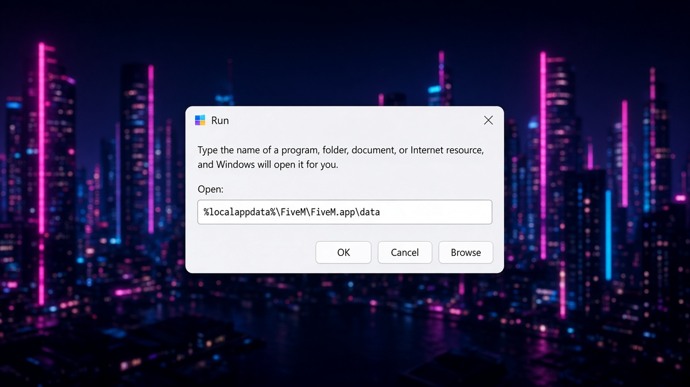
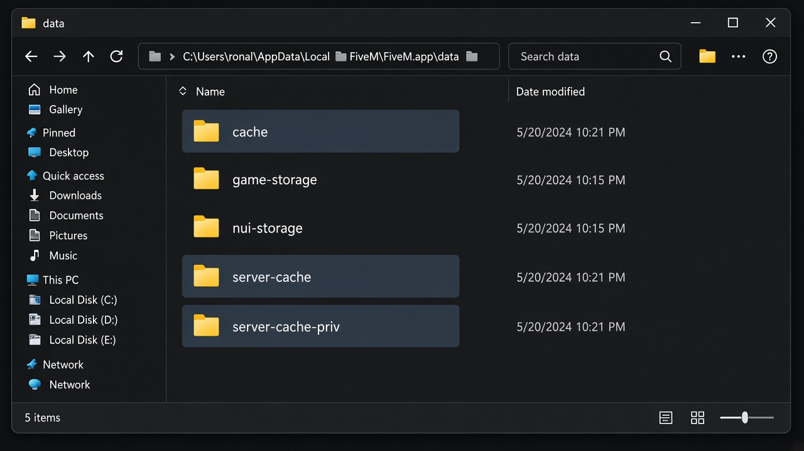
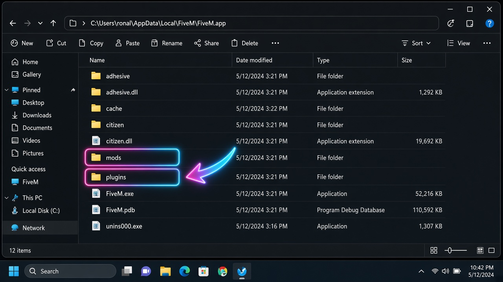

Delete these
cacheserver-cacheserver-cache-priv

Do this after installing shaders, if textures look old, or if a server will not finish loading.
Open cache folder opens File Explorer on FiveM.app\data. The clear-cache helper closes FiveM, then deletes only cache, server-cache, and server-cache-priv. It does not touch game-storage, GTA V, or your shader files. Windows may show SmartScreen — Run anyway is fine.
cacheserver-cacheserver-cache-privgame-storage — settings and local datamods and plugins you just installed
%localappdata%\FiveM\FiveM.app\data
Open this folder for me
data, select cache, server-cache, and server-cache-priv.game-storage.The first join after this is slower. That is normal. The server is sending files again.


Clearing cache does not remove the shader pack. Your mods and plugins stay where you put them.